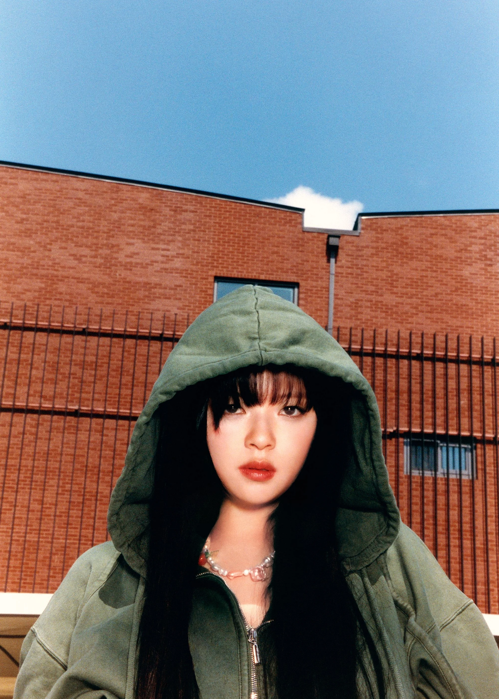
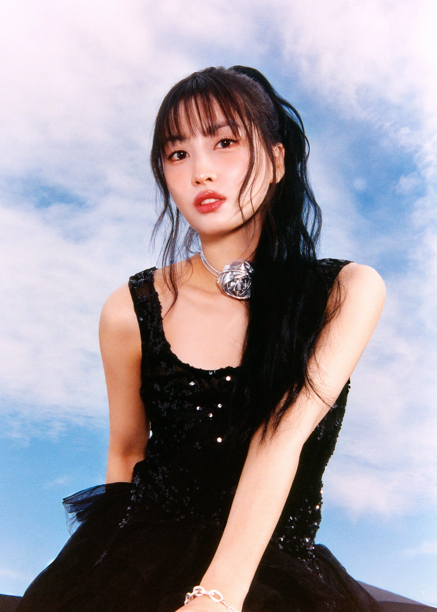
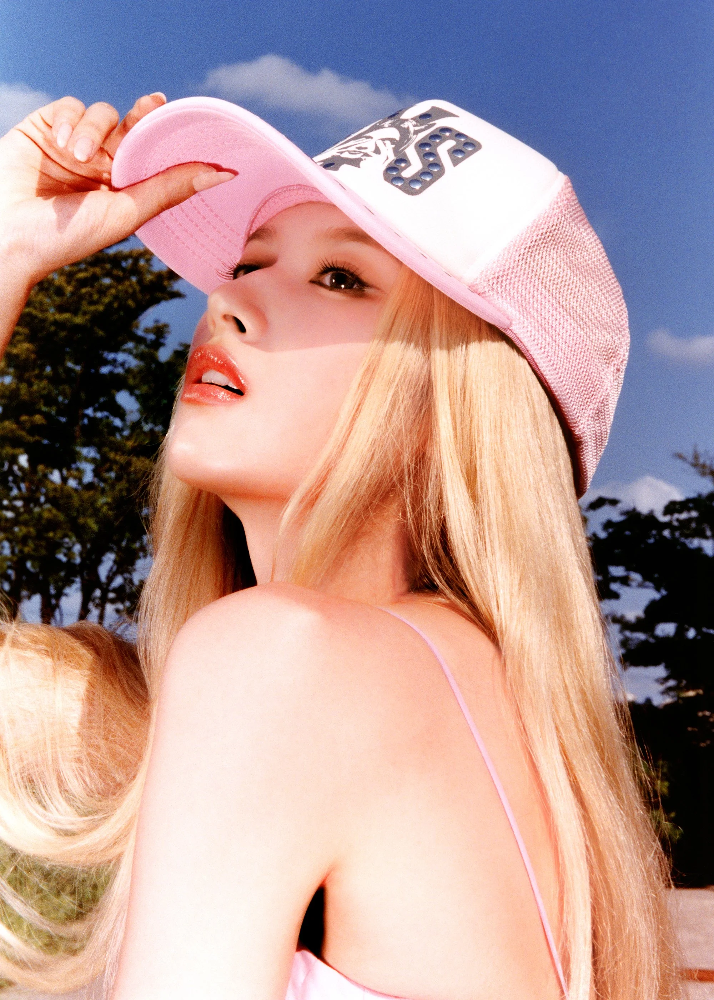
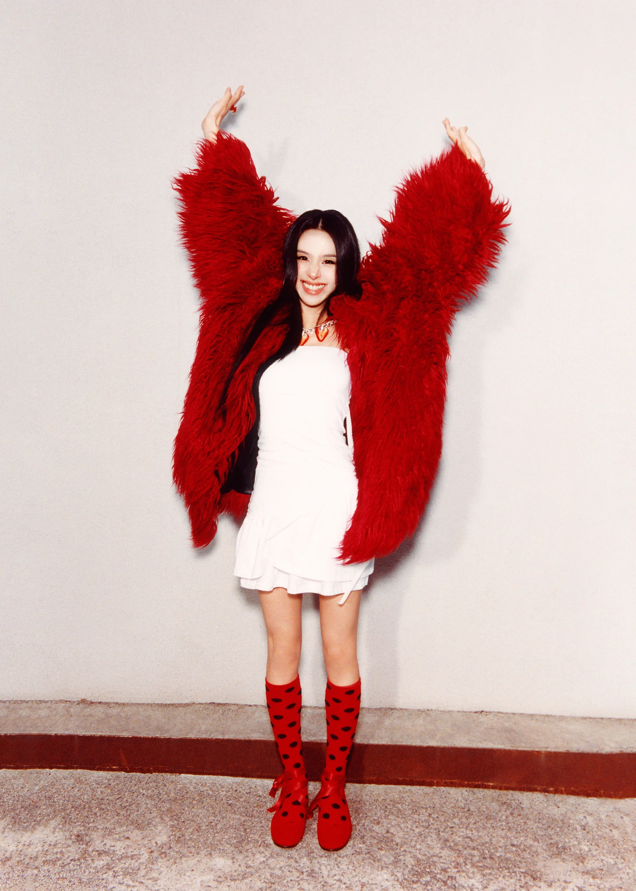

NAYEON(나연)
Position(s): Lead Vocalist, Lead Dancer, Center, Face of the Group
Birthdate: September 22, 1995
Zodiac Sign: Virgo
Nationality: Korean
Representative Color: Sky Blue
Representative Emoji: 🐰
Instagram: @nayeonyny




